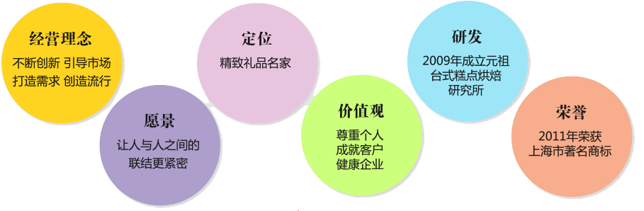
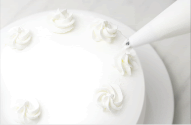
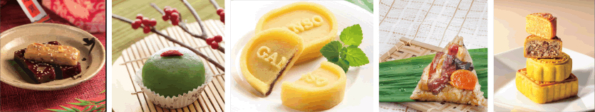

品牌介绍
1981年创始于台湾，1993年第一块鲜亮醒目的"元祖红"招牌在上海竖起。至今元祖门店遍及台湾两岸，力求以时效确保品质新鲜、服务贴心；随著产品不断创新和门店的扩增，公司每年都在稳步成长。今天这块元祖红招牌已遍布中国各大城市，并成为家喻户晓的"精致礼品名家"。
品牌定位


讲究饮食文化·坚持食品品质
新鲜让美味加分，为了喜爱元祖食品的消费者能享用到新鲜的产品，元祖不辞繁琐工序，坚持各门店现场裱花，确保美味与新鲜传递到消费者手里
演绎民俗·创新传统
元祖Much蛋糕、春节八宝年糕、清明麻糬、端午元祖龙粽、绿豆糕、中秋元祖雪月饼…… 元祖根据不同节令，推出相应的礼盒与商品。
